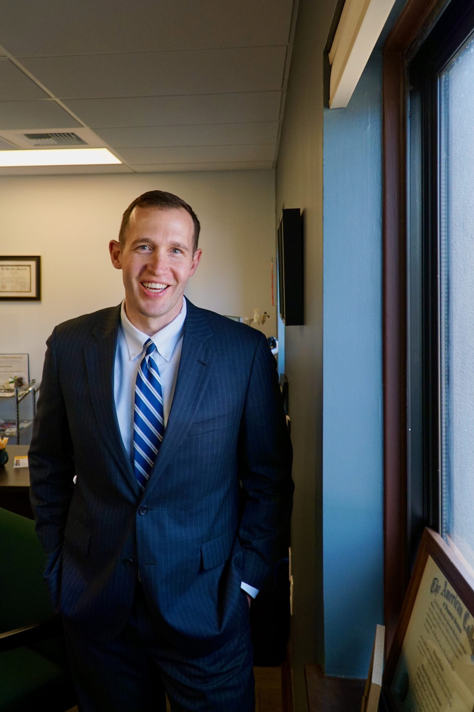

OSU Fisher College of Business · #8 Nationally Ranked
We connect, support, and advocate for WP MBA students — whether you're in your first semester or crossing the finish line.
Upcoming Events Contact the CouncilGive back to the community. The council is hosting a blood drive — every donation makes a real difference. Come out and participate with your fellow WP MBA students.
Join us for an evening celebrating community service and leadership among Fisher Graduate students. Nominations recognized, connections made, memories created.
Stop by for donuts and a chance to connect with Fisher's deans. A relaxed opportunity to meet leadership, share feedback, and start the week right.
Free professional headshots for graduate students — great for LinkedIn, your professional website, and conferences. Stop by any session to receive your free portrait.
Mon Apr 6 | 9AM–1PM | Graduate School Seminar Space (UH 250Q)
Fri Apr 10 | 9AM–1PM | Graduate School Seminar Space (UH 250Q)
Wed Apr 15 | 9AM–1PM | Biomedical Research Tower (BRT 130)
Tue Apr 21 | 12PM–4PM | Buckeye Commons
Your elected representatives for the 2026–2027 academic year — Working Professional MBA students from across central Ohio, balancing careers, families, and full course loads.
Over the last year, I have had the honor of serving as Secretary for the Council. During this time I have been able to make invaluable connections with my fellow Council members, WPMBA students, and with peers across all Fisher Graduate programs. As President, I will draw on expertise I gained while serving as President of the Multicultural Greek Council in 2018 during my undergrad years here at OSU. I plan to continue the social traditions established over the past year — Happy Hour, Tailgates — and simultaneously invest more into academic, professional, and philanthropic programming opportunities that allow for both in-person and virtual participation.
I'm interested in continuing to build my skillset and expand my network within the WPMBA program. I previously worked as an office assistant, where I gained experience with meeting coordination, minute taking, and complex calendar scheduling. In my current role in finance operations, I help manage transactions within the College of Public Health, including creating deposits and working directly with university financial service teams — a combination of administrative and financial experience I'm excited to bring to the Council.
As a 2024 medical school graduate, I have spent much of my training time serving in leadership roles within academic programs. I served as co-president of my graduating medical school class and was a College of Medicine Curriculum Committee Member, working closely with classmates and administration to address student concerns and improve communication. I am currently an Anesthesiology resident at The Ohio State University and am actively involved in resident recruitment, mentoring, and education — reinforcing my interest in academic leadership and program development.
The two main reasons I'm drawn to this role are networking and mentoring others. Being primarily an online student, the VP of Distance Learning position is an excellent way to meet new people and get involved at Fisher. I have 10+ years of professional experience and genuine passion for mentoring and teaching — helping students navigate the program and find career development opportunities. I hope to build relationships during my time here that continue well into my professional life.
I have a strong interest and background in Finance — I graduated with an undergraduate finance major from Fisher, served as fundraising chair of Ohio State's undergraduate student radio club, and have multiple years of experience in the financial services industry. My MBA elective focus is finance as well. I genuinely enjoy being a team player and think I can offer a lot to the effort of making the program experience better for all students!
I'd love the chance to serve on student council again, especially in the Internal PR role. Having spent more time in the program, I have a better understanding of our cohort — what people respond to, what they care about, and how busy everyone is. This year, I'd love to emphasize opportunities that strengthen cohort outcomes: career fairs, alumni gatherings, and recruiting sessions. Being more than halfway through the program myself, I also want to make the most of this time by building connections, supporting each other, and creating lasting memories. Here's to Buckeye Nation. O-H!
As a working professional and veteran, I recognize that our program's value lies in the strategic partnerships we build with local industry leaders. My primary goal is to formalize frameworks for corporate partnerships — creating institutionalized pathways for onsite visits and collaborative initiatives so every student has direct, recurring access to the regional Columbus business ecosystem. I also aim to transform seasonal career fair interactions into year-round engagements and use my experience in process innovation to coordinate high-caliber speakers that fit our professional schedules.

I'm applying for this role because it aligns with my strengths and my passion for building meaningful, lasting connections within the Fisher community. As a lifelong Upper Arlington resident and Ohio State alumnus, I'm deeply invested in strengthening ties between current WPMBA students and Fisher alumni. Professionally, my work as a financial advisor centers on building long-term relationships and creating opportunities for others — skills that translate directly to this role. I would welcome the opportunity to foster networking, collaboration, and professional development across WPMBA students, graduates, and other Fisher graduate programs.
I am currently working on the Fisher Forum Application — an official networking platform connecting alumni to the Fisher community. This initiative aims to strengthen engagement between current students and alumni through a structured, accessible, value-driven platform maintained by WPMBA students. I genuinely enjoy building meaningful connections with people from diverse backgrounds, and I actively volunteer for event logistics and coordination. This year, our goal includes planning a hiking trip to Hocking Hills to create an opportunity for networking, wellness, and community building outside the classroom.
The Ohio State University Fisher College of Business Working Professional MBA is the only nationally ranked part-time MBA program in central Ohio — built for professionals who want to grow without putting their careers on pause.
Classes meet weekday evenings Monday through Thursday at 6:15 PM and are also offered online on Saturday mornings at 10:00 AM, so you can keep your job, your family, and your ambition moving forward simultaneously.
Enrollment has grown over 60% since 2021–2022, reflecting what central Ohio professionals have always known: the Fisher WP MBA is the smartest investment you can make in your career.
Learn more about the program at fisher.osu.edu →
Applications are reviewed on a rolling basis.
Reach out to the council, join the Facebook group, or follow us on Instagram for the latest news and events.
Stay up to date with council events, student life, and Fisher news — follow us at @wpmba_osu.